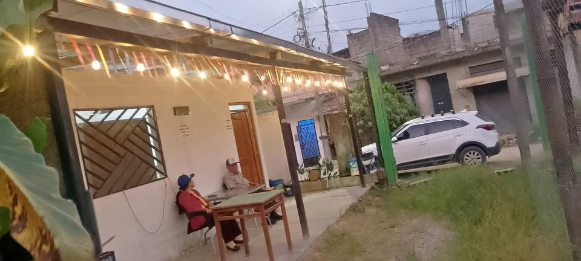

PEN100 248 m²

SE VENDE TERRENO UBICADO EN LA ENTRADA A SUPTE SAN JORGE A DOS CUADRAS DEL RECREO CHAPALA EN TINGO MARÍA, CUENTA CON LUZ AGUA Y DESAGUE, TIENE 248 METROS CUADRADOS PRECIO A TRATAR, CELULAR [hidden information], SOLO PERSONAS SERIAS SOLO LLAMADAS EXELENTE UBICACIÓN